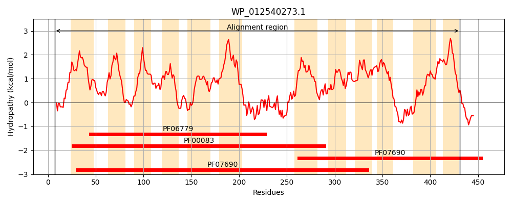
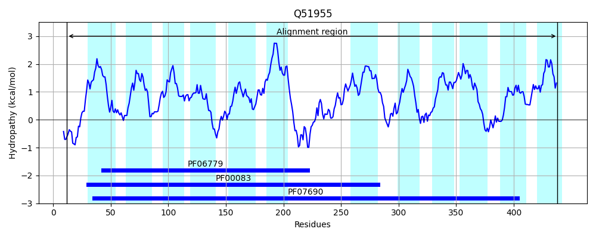
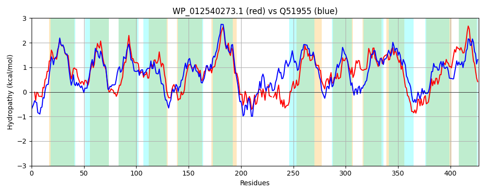

Hit Accession: Q51955
Hit TCID: 2.A.1.15.1
Hit Description: gnl|BL_ORD_ID|13942 gnl|TC-DB|Q51955|2.A.1.15.1 4-hydroxybenzoate transporter - Pseudomonas putida.
Mach Len: 427
e:0.000000
Query TMS Count : 12
Hit TMS Count: 12
TMS-Overlap Score: 11.650000
Predicted Substrates:CHEBI:19889;(3,4-dihydroxyphenyl)acetate, CHEBI:17879;4-hydroxybenzoate
BLAST Alignment:
Score: 979 , Bit scores: 381 bits, E-value: 1.9e-129, Alignment length: 427, Percentage identity: 45
Query: 7 VDVKAWIDARPVSRFQWNVLLLCFIIIMLDGYDAAVMGFVAPALIEDWGISRAEMGPILGAAMFGVAIGALVAGPLSDRYGRKRILLWSVALFALFSLAGAVAQSPSQLALMRFLTGLGLGAVMPNCVTLVAEYMPERRKGVMITLMYSGFNVGSGLGGFIAAGLLSHYSWHSALIFGGVLPLVVLPFMIVMLPESAMNMVARRLPGEQIARALNRLGGQFTAET-VFQL-NAPPITRSSKVAQLFRHGYARGTIALWLTYFMGLFVIYLLNGWLPTILRSGGLSLQQAAMMTGLFQLGGPLGGILVGMLMDRASAKAVIAATYFLGCLCLLSQGLMDFGSAALSVLIFISGMCINGAQNGLQAYSPAYYQTEIRATGVSWMHGIGRTGAILSSTLGGMLMLAVPGHSSIFLVLALPACLAGICILL 431
+DV+++I+ +P+SR+QW V+LLCF+I+ LDG D A MGF+APAL ++WGI RA +GP++ AA+ G+ GAL +GPL+DR+GRK +L+ +V +F FSLA A A + QL ++RFLTGLGLGA MPN TL++EY PER K +++T M+ GFN+G GGFI+A ++ Y WHS L+ GGVLPL++ ++V LPESA +V R ++I + L+ + Q AE F + + S A +F Y GT+ LWLTYFMGL ++YLL WLPT++R G S++QAA + LFQ GG L + VG MDR + VI Y L + + G L+ L+ I+GMC+NGAQ+ + + + +Y T+ RATGVSWM GIGR GAIL + G L+ + L +PA LA + +++
Sbjct: 12 LDVQSFINQQPLSRYQWRVVLLCFLIVFLDGLDTAAMGFIAPALSQEWGIDRASLGPVMSAALIGMVFGALGSGPLADRFGRKGVLVGAVLVFGGFSLASAYATNVDQLLVLRFLTGLGLGAGMPNATTLLSEYTPERLKSLLVTSMFCGFNLGMAGGGFISAKMIPAYGWHSLLVIGGVLPLLLALVLMVWLPESARFLVVRNRGTDKIRKTLSPIAPQVVAEAGSFSVPEQKAVAARSVFAVIFSGTYGLGTMLLWLTYFMGLVIVYLLTSWLPTLMRDSGASMEQAAFIGALFQFGGVLSAVGVGWAMDRYNPHKVIGIFYLLAGVFAYAVGQSLGNITVLATLVLIAGMCVNGAQSAMPSLAARFYPTQGRATGVSWMLGIGRFGAILGAWSGATLLGLGWNFEQVLTALLVPAALATVGVIV 438 | Protein Hydropathy Plots: |
|---|
|  |  |
Pairwise Alignment-Hydropathy Plot:
|
|---|
|  |